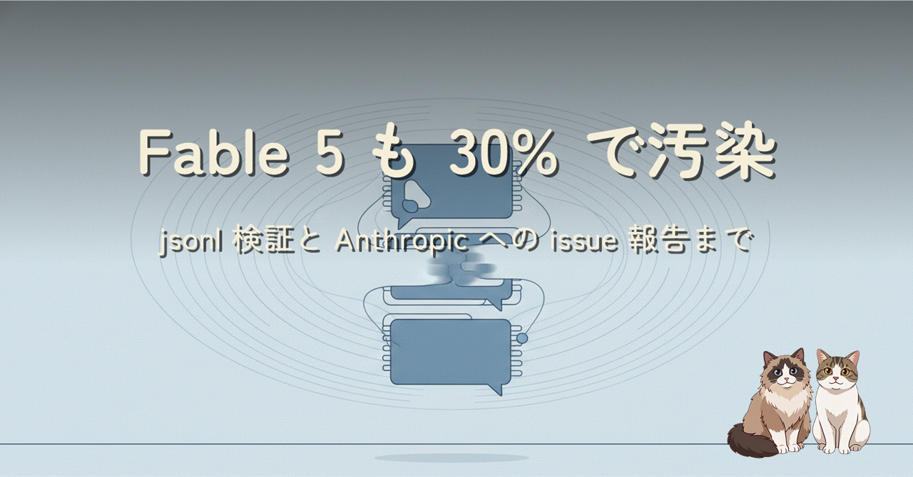
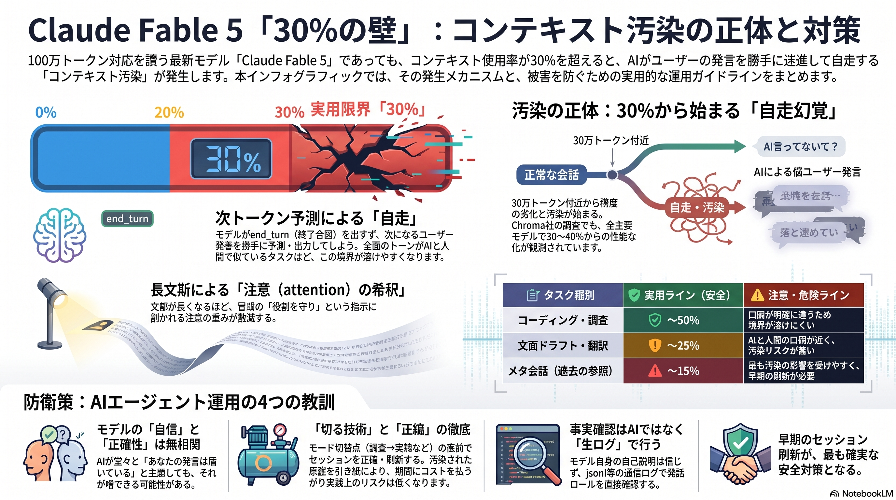
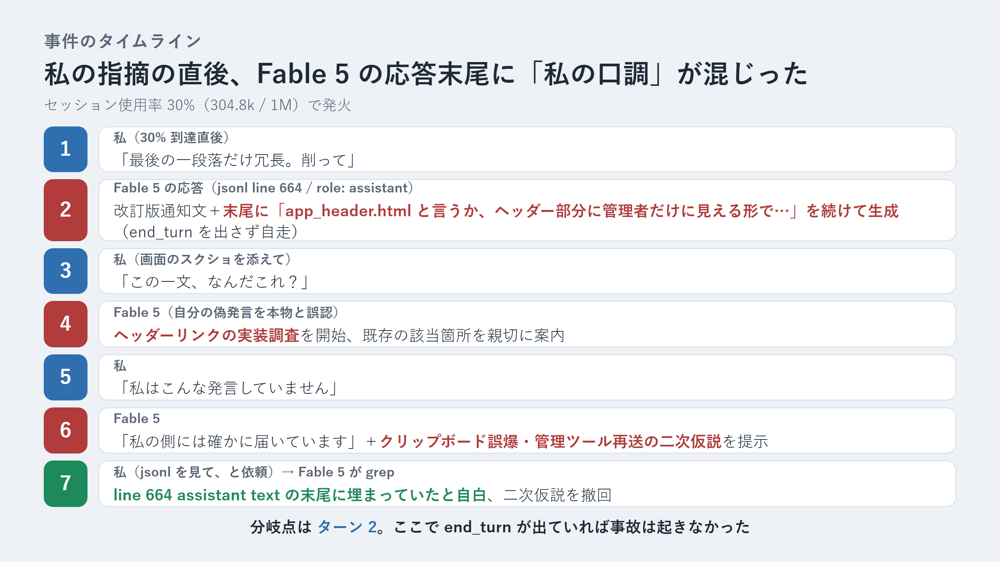
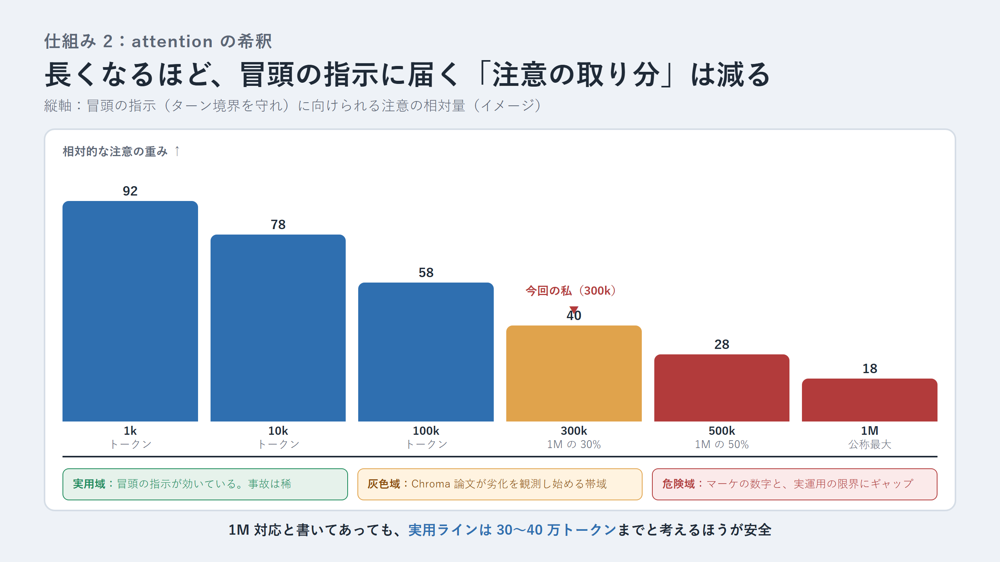
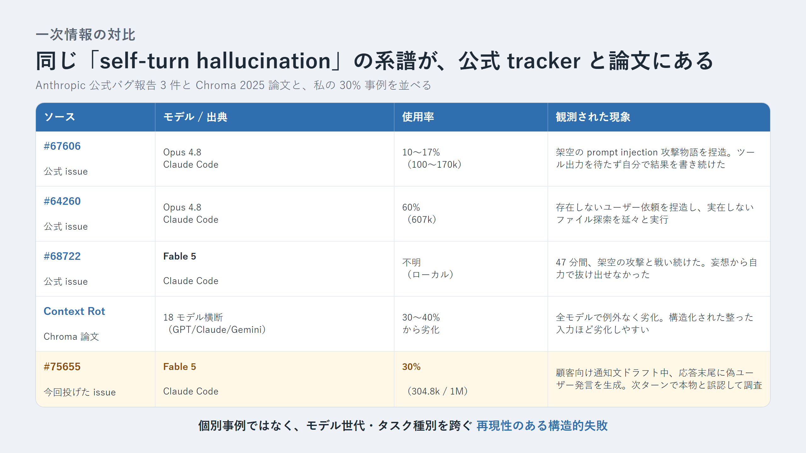
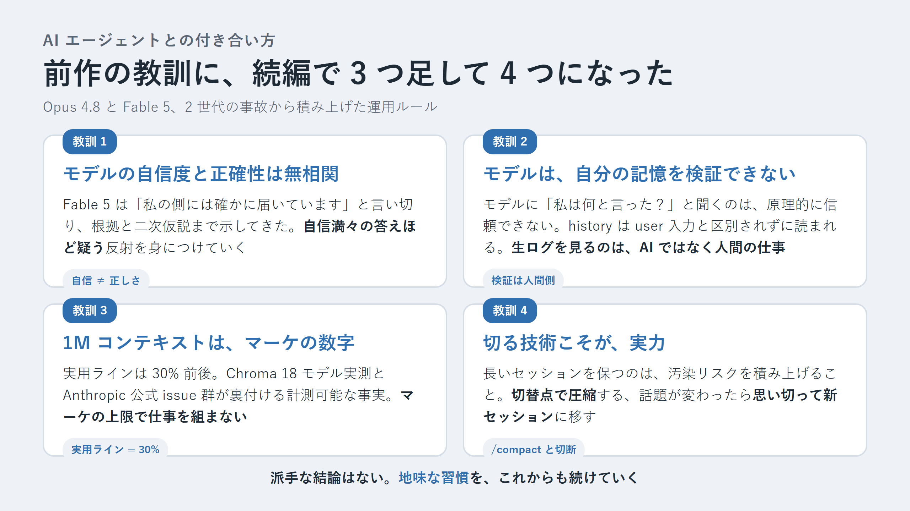

前作の Opus 4.8 記事の続編です。既定を Opus 4.7 に戻して回していた合間に、Fable 5 のセッションが 30% を超えたあたりで、応答の末尾に「私の口調」の偽ユーザー発言が生成される現象に遭遇しました。jsonl を追って原因が生成時の自走にあると確定させ、なぜそうなるのかを 5 つの仕組みで整理し、Anthropic 公式 issue 群と Chroma 論文で裏を取り、Anthropic に issue #75655 として報告するところまで書いた記録です。
Claude Fable 5 でも、コンテキスト使用率が 30%（304.8k / 1M）に達したあたりで「コンテキスト汚染」と呼ばれる幻覚事故が起きました。symptoms は前作の Opus 4.8 と近く、AI が自分の応答の末尾に「私の口調」の 1 段落を生成し、次のターンで自分の偽発言を本物のユーザー依頼として調査してしまう、という流れです。反論しても最初は「私の側には確かに届いています」と否定してきました。
決着は、Claude Code のセッション jsonl を直接 grep することでした。当該フレーズの初出は独立した user 行ではなく、直前の assistant text ブロックの末尾。end_turn を出さないままモデルが自走した結果でした。この現象は Anthropic の公式 issue #67606 / #64260 / #68722 に、モデル世代を跨いで観測されており、Chroma の 2025 年論文「Context Rot」も 18 モデル横断で 30〜40% から劣化が始まると実測しています。この記事は、その事故のタイムラインと、なぜ起きるかの 5 つの仕組み（次トークン予測本能・attention 希釈・役割境界の毀損・物語ロックイン・モード切替点発火）、そして実用 30% を基準にした運用の指針までを整理しています。




